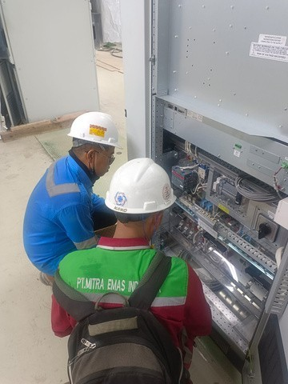
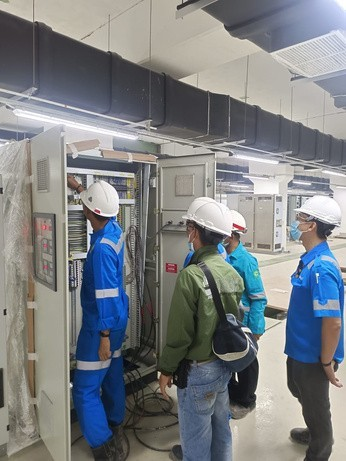
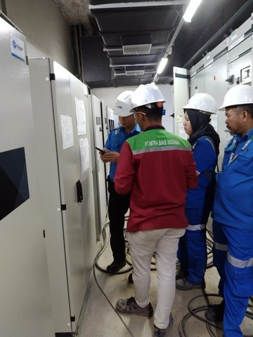
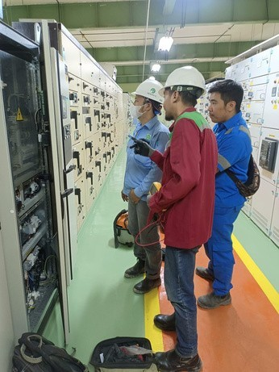
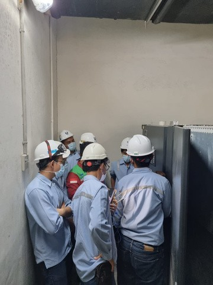
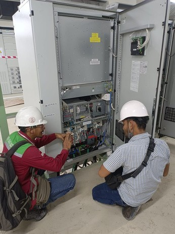
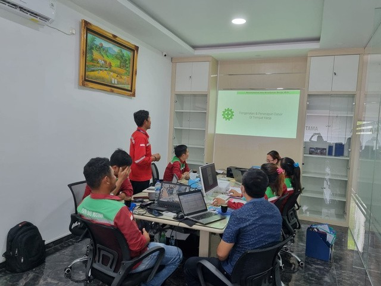

OUR PROJECT
Aktivitas lapangan dokumentasi pekerjaan dan layanan yang sedang dan telah dikerjakan.
Commission Unit
Aktivitas pengecekan, persiapan, dan commissioning unit sebelum perangkat digunakan secara operasional.

Commission Unit Activity
Dokumentasi aktivitas commissioning unit di lokasi pekerjaan.

Commission Unit Activity
Proses pengecekan perangkat sebelum unit digunakan.

Commission Unit Activity
Aktivitas teknis untuk memastikan unit bekerja dengan baik.

Commission Unit Activity
Pemeriksaan dan persiapan sistem pendukung unit.

Commission Unit Activity
Dokumentasi pengerjaan commissioning bersama tim teknis.

Commission Unit Activity
Pelaksanaan pengecekan akhir sebelum serah fungsi unit.

Commission Unit Activity
Kegiatan pendukung commissioning pada area kerja pelanggan.
Onsite Activity
Aktivitas kunjungan lapangan untuk melakukan pengecekan, instalasi, koordinasi, dan pekerjaan teknis langsung di area pelanggan.

Onsite Activity
Kegiatan teknis langsung di lokasi kerja pelanggan.

Onsite Activity
Pengecekan kondisi perangkat dan area kerja.

Onsite Activity
Dokumentasi pekerjaan lapangan oleh tim teknis.

Onsite Activity
Koordinasi pekerjaan dan pemeriksaan peralatan.

Onsite Activity
Pelaksanaan pekerjaan sesuai kebutuhan proyek.

Onsite Activity
Aktivitas lapangan untuk mendukung pekerjaan teknis.

Onsite Activity
Dokumentasi proses pekerjaan di area operasional.
Preventive Maintenance
Aktivitas pemeliharaan berkala untuk menjaga performa perangkat agar tetap stabil, aman, dan siap digunakan.

Preventive Maintenance
Pemeliharaan berkala untuk memastikan perangkat tetap optimal.

Preventive Maintenance
Pengecekan kondisi perangkat dan komponen pendukung.

Preventive Maintenance
Kegiatan perawatan untuk mengurangi risiko gangguan operasional.

Preventive Maintenance
Dokumentasi pengecekan teknis pada sistem kelistrikan.

Preventive Maintenance
Pelaksanaan maintenance sesuai kebutuhan perangkat.

Preventive Maintenance
Pemeriksaan komponen agar sistem tetap berjalan stabil.

Preventive Maintenance
Perawatan dan pengecekan pada area kerja pelanggan.

Preventive Maintenance
Monitoring kondisi perangkat selama proses maintenance.

Preventive Maintenance
Dokumentasi akhir setelah proses perawatan dilakukan.
PROJECT EXPERIENCE
Daftar pengalaman pekerjaan PT. Mitra Emas Indotama berdasarkan data electrical work dan civil work.
Electrical Work Experience - PT. MITRA EMAS INDOTAMA
| Tahun | Pekerjaan | Lokasi |
|---|---|---|
| 2016 | Resistoflex Fully PVDF & PTFE Lined Fitted | RAPP – Chemical Site |
| 2016 | Sparepart Industrial UPS | RAPP – Power Plant |
| 2016 | Preventive Maintenance UPS Industrial | RAPP – Power Plant |
| 2017 | UPS Industrial 4 x 20Kva & 4 x 100Kva | RAPP – Power Plant |
| 2017 | Preventive Maintenance UPS Industrial | RAPP – Power Plant |
| 2018 | UPS Industrial 2 x 20Kva & 2 x 100Kva | RAPP – Power Plant |
| 2018 | Preventive Maintenance UPS Industrial | RAPP – Power Plant |
| 2019 | UPS Industrial 4 x 20Kva | RAPP – Power Plant |
| 2019 | Preventive Maintenance UPS Industrial | RAPP – Power Plant |
| 2019 | Industrial Battery Charger 50A & 120A | RAPP – Power Plant |
| 2019 | Industrial Battery | APICAL Group |
| 2019 | Preventive Maintenance UPS Industrial | PT. Unilever Oleochemical |
| 2019 | TnC Industrial UPS 40Kva – 3 UNIT | PT. PLN Pembangkit Ombilin |
| 2020 | Preventive Maintenance UPS Industrial | Sumatera Development Unit |
| 2020 | UPS Industrial 2 x 100Kva | RAPP – Kerinci |
| 2020 | Industrial Battery Charger 25A – 10 UNIT | RAPP - Kerinci |
| 2021 | Lightning Protection System – 4 UNIT | RAPP – Chemical Site |
| 2022 | UPS Industrial 2 x 40Kva | RAPP – Power Plant |
| 2022 | UPS Industrial 2 x 40Kva – 8 UNIT | RAPP – BM Project |
| 2022 | UPS Industrial 100Kva | RAPP – BM Project |
| 2023 | Preventive Maintenance UPS Industrial | RAPP – Power Plant |
| 2023 | Troubleshooting Industrial Battery Charger 50A | PT. Unilever Oleochemical |
| 2023 | Preventive Maintenance Lightning Protection | RAPP – Chemical Site |
| 2023 | Troubleshooting Industrial UPS 2 x 160Kva | RAPP – RAK Site |
Civil Work Experience of Construction Project
PT. MITRA EMAS INDOTAMA
| Tahun | Pekerjaan | Lokasi |
|---|---|---|
| 07 Desember 2021 | Pemasangan Pagar Townsite II Block AA | RAPP – Kerinci |
| 28 Desember 2021 | Civil & Electrical Work - Renovate | RAPP – Kerinci |
| 03 Maret 2022 | Mechanical Office RKE Renovation | RAPP – Kerinci |
| 07 Maret 2022 | Waterproofing Employee Apartement | RAPP – Kerinci |
| 22 April 2022 | Additional Civil & Electrical Work Renovation | RAPP – Kerinci |
| 27 April 2022 | Waterproofing Rukan Block 3 No. 6 - 15 | RAPP – Kerinci |
| 03 Juni 2022 | New Room RPE Maintenance Office | RAPP – Kerinci |
| 08 September 2022 | Expansion Toilet Yayasan Mutiara Harapan Wiratama | RAPP – Kerinci |
| 15 September 2022 | Mechanical Power Workshop Renovation | RAPP – Kerinci |
| 17 Oktober 2022 | Mechanical Workshop New Toilet PB#1 | RAPP – Kerinci |
| 19 Oktober 2022 | New Room RPE Maintenance | RAPP – Kerinci |
| 19 November 2022 | Build Oil Storage LUB RPE | RAPP – Kerinci |
| 14 Januari 2023 | Build LUB Storage LUB PB#3 | RAPP – Kerinci |
| 24 Juni 2023 | New Room Document Storage for New Plant | RAPP – Kerinci |
| 18 Juli 2023 | Build Wall Workshop RKE | RAPP – Kerinci |
| 07 Agustus 2023 | Painting Pouk Church Wall Townsite I | RAPP – Kerinci |